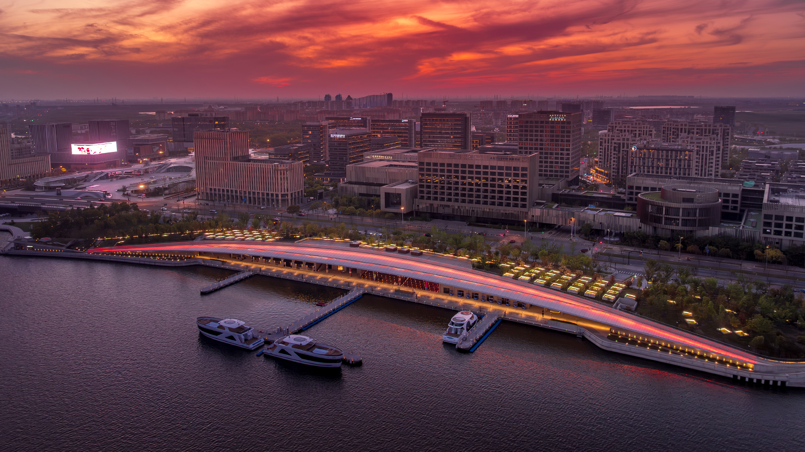

图说：临港滴水湖全景航拍 · 来源：临港管委会
上周六坐16号线去滴水湖。
早高峰挤进去的时候，我数了一下，脚边能放下一个包就不错了。
旁边一个穿骑行服的小伙子，车筐里塞着头盔，被挤得脸都贴玻璃上了。
"等新铁路通了就好了"，他跟我说这话的时候，是真心实意的。
巧的是，这条新铁路这两周刚上了新闻头条。
而且通车时间，比我之前以为的还要近。
— 01 —
先来说个正经喜讯
今年8月31号，市域铁路南汇支线完成了全线结构贯通。
市政府新闻发布会上给的时间表是——明年7月建成通车。
没开玩笑，就是2027年7月。
这条线全长34.86公里，设6个站：
浦东T3航站楼站 ← 鹏翔路站 ← 滨海森林公园站 ← 星海湾路站 ← 滴水湖北站 ← 上海东站站。
从滴水湖到浦东机场、上海东站，一条线直通。
以后外地朋友来上海，落地就能直接坐地铁去滴水湖露营——想想都爽。

图说：滴水湖地铁站 · 来源：临港管委会
不止南汇支线。
南枫线也在推进中，滴水湖站是关键节点。S2沪芦高速明年也要拓宽改造。
滴水湖核心区公交站点500米覆盖率，今年目标是做到100%。
说白了就是——临港正在疯狂补课交通。
📌 敲黑板：
市域铁路是上海地铁的"大哥"级别，速度比普通地铁快不少，跨区通勤专门造的。南汇支线通车后，临港到市区的通勤时间会明显缩短，临港的房价……懂的都懂。
— 02 —
现在去临港，怎么去最舒服
南汇支线还没通，说说当前的几种打开方式，各有各的爽点：
16号线地铁直达
龙阳路上车，滴水湖站直接下车。缺点就是早高峰挤，单程约1小时。非高峰时段好很多，甚至能找到座位看湖。
开车走S2沪芦高速
市区过去大概45分钟，过路费15块。湖边酒店、商场基本都有免费停车场。周末推荐上午9点前到，避开停车场高峰。
骑行或徒步
滴水湖有完整的环湖绿道，直径6.66公里（注意是直径不是周长），环湖一圈大概40多公里。共享单车也能骑，1.5小时慢摇一圈。

图说：滴水湖一号码头 · 来源：临港管委会
— 03 —
到了滴水湖，值得去的几个地方
我尽量说点不是网上抄烂的。
★ 朵云书院（港城广场店）
5-7楼，通天书架是真的震撼。10点前进5楼，满足最低消费就能抢到靠窗位置，湖景直接怼脸上。文创产品挺有意思的，别错过。
💡 暗知识：别在周末下午去，人挤到转不开身。工作日的下午3点后基本没什么人，咖啡也续杯。
★ 一号码头
半开的伞状水泥框架，工业风性冷淡，拍照巨出片。晴天湖水蓝得像假的，手机随手一拍都不用滤镜。日落时分过去，金色湖面配灰架子，那反差感。
★ 环湖骑行
推荐起点滴水湖洲际酒店，顺时针方向。沿途会经过银杏、水杉林，秋天那个颜色层次绝了。租单车推荐美团，环湖一圈1.5小时足够。
★ 耀雪冰雪世界
滴水湖畔，室内滑雪场。夏天避暑神器，冬天更有感觉。新手也能玩，有专门的教学区和儿童乐园。
★ 西岛·中银金融中心
今年1月刚竣工，临港目前最高的楼。湖边远观就够了，近看更震撼。晚上楼身有灯光，拍夜景值得来。
— 04 —
一丢丢实用小提醒
吃饭：临港主城区有港城广场、临港宝龙广场两大商圈，选择不算多但够吃。朵云书院楼下有个日料还不错。想体验湖边情调，可以试试滴水湖洲际或者皇冠假日的自助餐。
住宿：预算够直接滴水湖洲际酒店，就在湖边，下楼就是环湖步道。性价比选地铁附近的如家、全季，步行10分钟到湖边。
拍照好时段：日落前1小时（现在差不多下午5-6点），湖面颜色是金红色的。晚上一号码头和中银金融中心的灯光秀值得拍。
避坑：周末不要开车去湖边的网红餐厅，停车位少到离谱。共享单车环湖注意防晒，湖边没什么遮挡。
其实去了好几次滴水湖之后，发现一件事。
它不像外滩那么热闹，也不像朱家角那么商业化。
就是一个很圆、很大、很蓝的湖，加上一些还在长身体的写字楼。
但不知道为什么，在湖边站一会儿，人就松弛下来了。
可能这就是上海缺的那种"空"吧。
明年南汇支线通了，我一定会第一时间坐一趟。
>> 你呢？评论区聊聊你印象最深的一次滴水湖之行 <<
本文信息参考：临港管委会、上海市交通委员会、澎湃新闻